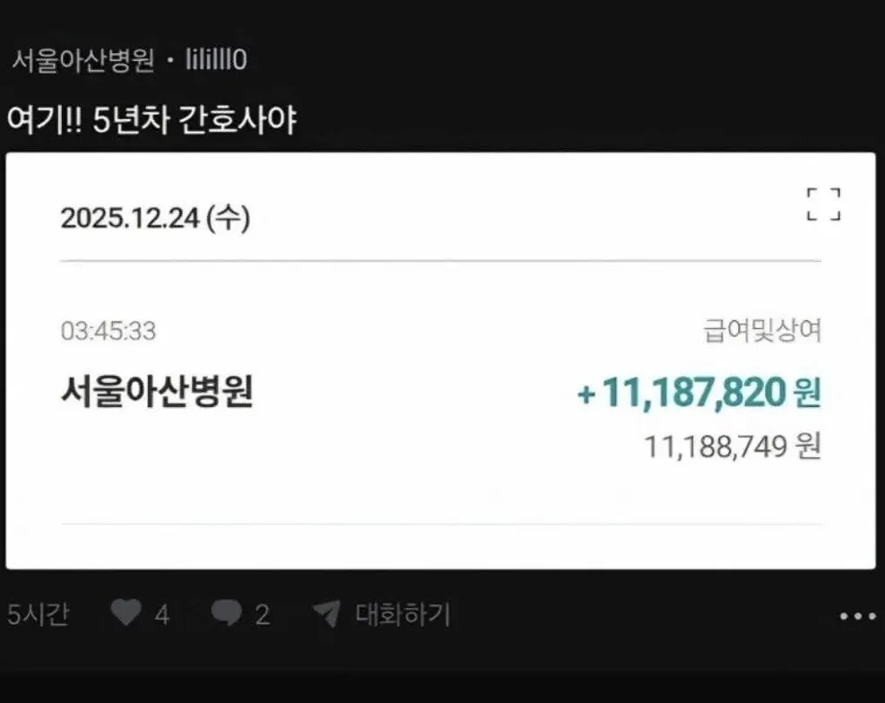

급여 및 상여 포함

일하면서 공부도 병행해야함
대기업이고 3교대면 일집일집 자느라 바쁨
스크럽 널스 이신거 같은데..
내 여친은 여길 왜 그만뒀을까..
저만큼 받아도 개 ㅆ ㅈ같은가보다 ㅠㅠ
말할 수 없을만큼
그럴만해…
저건 연말이라 보너스포함이고 너 입원해봐... 4년제 나왔는데 사회복지사? 업무기본에 교대조 도는거야 ㅋㅋㅋㅋ 환자 토사물치우고 똥치우고 피부나 바닥에 피 닦아주고 어제출근 12시간 또출근... 외국인은 말도안통해 할아버지할머니 무례하고 객실에 담배피는 미친놈들까지 인간대우해줘야돼... 월급 400벌어도 노동강도나 시간 샹각하면 박봉임. 너가 4인실이라도 입원해보면 안다
거기에 태움도 있었겠지..
새벽에 순찰돌아아됨. 환자 혈압 호흡 맥박 상태 체크, 새벽에 입원한 위급환자들 응급실 호송 같은 돌발업무도 워낙많고... 저년차면 선배눈치랑 동료들 갈등도 그만큼 심하고 가녀린 몸으로 저걸 해낸다는게 진짜 존나 존경스러울정도임.
옛날에 군대 3년 가던 시절 이등병 생활을 3교대로 계속 하는거네
서울아산병원에서 공사 한적 많은데 진짜 시도때도없이 코드블루 엄청 뜨더라 낮이건 새벽이건 간호사들 개바쁨
기본월급 + 분기상여 + 명절상여 + 성과급 +@뭐 그런거 아닌가
떡값 상여 시즌이긴 하네
그래도 세후 저렇게 받을려면
대형병원 간호사면 받을만하지 ㅋㅋ
영끌인데 무슨 월급인것처럼 ㅋㅋㅋㅋ
대단하긴 하네 난 상여 포함해도 월에 저정돈 안나옴 ㅋㅋ
와 시발 월급이 한 천육백쯤되냐??
사기나 불법빼곤 저만한 가치의 노동을 해내는 경우 일듯
아는 대형병원 간호사 분이 하루 잠 2-3시간씩 자면서 공부하다가 출근하는거 본적있는데 저러다 죽는거 아닌가 걱정한적 있음
탑병원은 시험도본다 ㅋㅋㅋㅋㅋ 공부도해야함